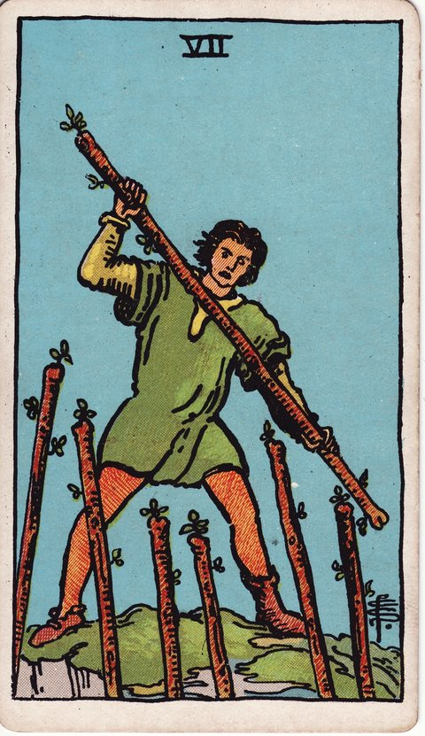

완드 · 타로 카드 백과사전
완드 7

정방향
키워드: 방어와 수성 · 굳건한 신념 · 유리한 고지 · 높은 자리 사수 · 흔들림 없는 자세 · 밀려드는 도전
조언: 여러 도전이 몰려와도 자신의 자리를 지킨다는 믿음을 잃지 마세요.
연애운
솔로
마음에 둔 사람에게 다가가려면 적극적으로 마음을 표현해야 하는 시기입니다. 경쟁자가 있어도 물러서지 말고 진심을 보여주세요.
커플
관계를 지키기 위해 적극적으로 마음을 표현해야 하는 시기입니다. 주변의 시선이나 방해에도 흔들리지 않는 태도가 필요합니다.
재물운
소비
지출 원칙을 지키려는 의지가 시험받는 시기입니다. 주변의 권유에도 자신의 소비 기준을 굳건히 지켜내세요.
투자
힘든 상황에서도 재정적 원칙을 지켜내야 하는 시기입니다. 남들의 조급한 결정에 휩쓸리지 말고 자신의 판단을 믿으세요.
취업운
구직
치열한 경쟁 속에서 자신의 강점을 지켜내야 하는 시기입니다. 다른 지원자들과 비교되어도 자신만의 색을 잃지 마세요.
이직
자신의 입장과 성과를 지켜내야 하는 도전의 시기입니다. 여러 압박이 있어도 자신의 커리어 방향을 흔들림 없이 지켜내세요.
직장운
팀워크
다수결로 정해지는 팀 결정 속에서도 자신이 맡은 역할의 전문성을 지켜내야 하는 시기입니다. 목소리를 낮추기보다 근거를 갖고 자신의 제안을 설명해보세요.
개인성과
여러 동료가 같은 자리를 노리는 상황에서도 그동안 쌓아온 업무 전문성으로 승부해야 하는 시기입니다. 비교당하는 것에 위축되지 말고 자신만의 강점을 꾸준히 보여주세요.
사업운
창업준비
경쟁자들 속에서도 사업의 원칙을 지켜내는 시기입니다. 흔들림 없는 태도가 결국 시장에서의 입지를 지켜줍니다.
운영중
경쟁 속에서도 사업의 원칙을 지켜내는 시기입니다. 여러 압박이 있어도 처음의 신념을 잃지 마세요.
학업운
시험준비
소신을 갖고 자신의 공부 방식을 지켜나가는 시기입니다. 남들과 비교하며 흔들리지 말고 자신만의 페이스를 지키세요.
진로고민
진로에 대한 확신을 지켜야 하는 시기입니다. 주변의 반대나 걱정에도 자신이 정한 방향을 믿고 나아가세요.
건강운
신체
건강 관리 원칙을 지켜내며 유혹을 이겨내는 시기입니다. 주변의 권유에도 자신의 관리 루틴을 흔들림 없이 지켜내세요.
정신
여러 스트레스 속에서도 마음의 중심을 지켜야 하는 시기입니다. 흔들리지 않는 태도가 결국 마음의 평정을 지켜줍니다.
대인관계운
새로운 인연
새로 알게 된 인연을 계속 이어가려면 먼저 적극적으로 손을 내밀어야 하는 시기입니다. 주저하면 기회를 놓칠 수 있으니 용기를 내보세요.
기존 관계
한동안 뜸했던 친구나 동료와의 인연이 끊어지지 않도록 먼저 연락을 취해야 하는 시기입니다. 사소한 안부 문자 한 통이 멀어졌던 사이를 다시 붙잡아줄 수 있습니다.
명예운
흔들림 없는 태도로 평판을 지켜내는 시기입니다. 비판에도 소신을 굽히지 않는 모습이 결국 신뢰로 돌아옵니다.
이사운
어려움 속에서도 이동 계획을 지켜내는 시기입니다. 예상치 못한 장애물이 있어도 처음 세운 계획을 밀고 나가보세요.
자식운
아이를 위한 소신을 지켜내야 하는 시기입니다. 주변의 참견이나 비교에도 자신의 육아 방식을 믿고 지켜내세요.
역방향
키워드: 압박감 · 자신감 상실 · 포기의 유혹 · 풀린 다리 · 손 놓고 싶은 유혹 · 지쳐가는 저항
조언: 포기하고 싶은 마음이 들 때일수록 지금까지 쌓아온 것을 떠올려보세요.
연애운
솔로
여러 부담 속에서 관계를 지킬 자신감을 잃어가고 있을 수 있습니다. 자신을 의심하기보다 왜 이 사람을 원하는지 다시 떠올려보세요.
커플
주변의 반대나 압박에 관계를 지킬 힘이 빠져가고 있을 수 있습니다. 두 사람의 마음이 확고하다면 외부 시선에 흔들리지 마세요.
재물운
소비
지출을 절제하려던 결심이 여러 유혹에 흔들리고 있을 수 있습니다. 압박감에 지쳐 원칙을 놓아버리지 않도록 주의하세요.
투자
여러 압박 속에서 재정 관리를 포기하고 싶어질 수 있습니다. 지금 무너지면 그동안의 노력이 물거품이 될 수 있으니 버텨보세요.
취업운
구직
계속되는 탈락에 자신감을 잃어가고 있을 수 있습니다. 포기하고 싶은 마음이 들어도 준비를 놓지 않는 것이 중요합니다.
이직
여러 압박에 지쳐 자신감을 잃어가고 있을 수 있습니다. 지금까지 쌓아온 커리어를 떠올리며 스스로를 다독여보세요.
직장운
팀워크
다른 팀원들의 강한 주장에 눌려 자신의 의견을 자꾸 접고 있을 수 있습니다. 매번 양보만 하다 보면 회의에서 존재감이 옅어질 수 있으니 한 번은 분명히 짚고 넘어가세요.
개인성과
쏟아지는 업무량에 지쳐 이 자리를 계속 지킬 수 있을지 자신이 없어질 수 있습니다. 번아웃 직전이라면 상사에게 업무 조정을 솔직하게 요청해보세요.
사업운
창업준비
투자자나 경쟁자의 압박에 사업 방향이 흔들리고 있을 수 있습니다. 조급하게 원칙을 바꾸기보다 소신을 지켜보세요.
운영중
매출 압박과 자금 사정 악화로 사업을 접고 싶은 유혹이 커질 수 있습니다. 지금 문을 닫으면 그간의 투자와 신뢰가 사라지니 버틸 방법을 먼저 찾아보세요.
학업운
시험준비
주변의 압박에 흔들려 자신의 페이스를 잃고 있을 수 있습니다. 남과 비교하지 말고 원래의 계획으로 돌아가세요.
진로고민
진로에 대한 확신이 여러 반대 의견에 흔들리고 있을 수 있습니다. 포기하기 전에 왜 그 길을 선택했는지 다시 떠올려보세요.
건강운
신체
지친 몸과 마음으로 관리를 포기하고 싶어질 수 있습니다. 완벽하지 않아도 조금씩이라도 이어가는 것이 중요합니다.
정신
여러 압박에 마음이 지쳐 버티기 힘들 수 있습니다. 혼자 견디기보다 주변에 기대어 잠시 쉬어가는 것도 방법입니다.
대인관계운
새로운 인연
새로 알게 된 사람과 더 가까워지고 싶지만 거절이 두려워 다가가지 못하고 있을 수 있습니다. 완벽한 타이밍을 재기보다 가벼운 인사부터 다시 건네보세요.
기존 관계
주변의 참견이나 오해 속에서 관계를 지켜갈 자신이 점점 줄어들고 있을 수 있습니다. 관계를 포기하기 전에 상대의 진심을 먼저 확인해보세요.
명예운
여러 비판 속에서 자신감을 잃어가고 있을 수 있습니다. 모든 비판을 다 받아들이기보다 근거 있는 지적만 골라 참고하세요.
이사운
여러 장애물에 이동을 포기하고 싶어질 수 있습니다. 포기하기 전에 정말 다른 대안이 없는지 다시 확인해보세요.
자식운
여러 걱정 속에서 자신감을 잃어가고 있을 수 있습니다. 완벽한 부모가 아니어도 괜찮다는 것을 스스로에게 말해주세요.
같은 슈트: 완드 에이스 · 완드 2 · 완드 3 · 완드 4 · 완드 5 · 완드 6 · 완드 7 · 완드 8 · 완드 9 · 완드 10 · 완드 시종 · 완드 기사 · 완드 퀸 · 완드 킹
홈에서 직접 카드 뽑아보기 ↗